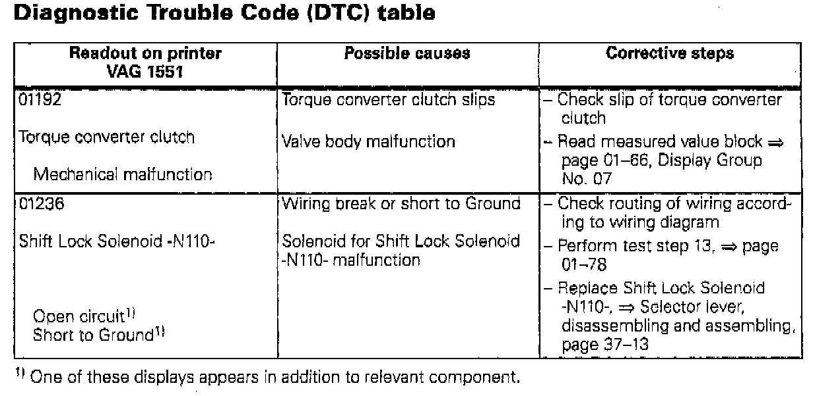

A/T - New DTC's Recognized by Control Module
Group: 01Number: 97-09
Date: April 16, 1997
File This Technical Bulletin in Repair Manual No: W42 011 294 120
Subject:
New Diagnostic Trouble Codes (DTC), 01M Automatic Transmission
Model(s):
Golf, GTI, Jetta, Cabrio 1996 -->
The automatic transmission control module can additionally recognize two Diagnostic Trouble Codes (DTC) not currently shown in the Repair Manual.

The DTCs above will be integrated into the Repair Manual at the next update.